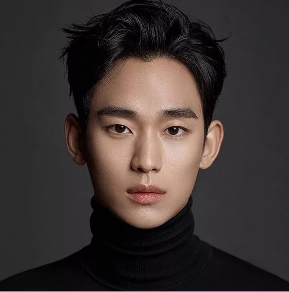

Ces acteurs et actrices talentueux ont non seulement joué des rôles mémorables dans des Kdramas populaires, mais ils ont également été reconnus pour leur excellence en remportant plusieurs prix prestigieux. Leur présence à l'écran et leur capacité à transmettre des émotions sincères ont contribué à leur popularité et à leur statut d'incontournables dans l'industrie des Kdramas.
